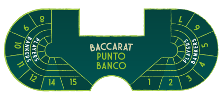
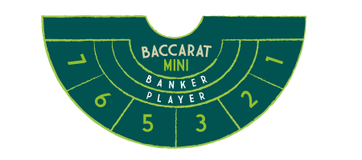
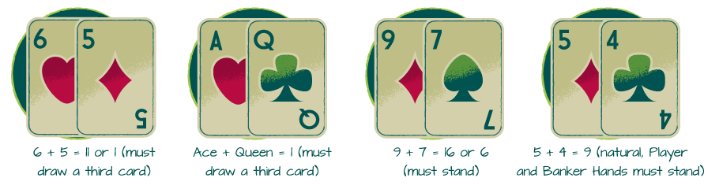

باكاراه

القواعد الأساسية للعبة باكاراه:
- بعد أن يضع جميع اللاعبين رهاناتهم على طاولة باكاراه فإن الموزع يقوم بتوزيع يدينِ يتكونا من بطاقتينِ لكل يد (تعرف يد اللاعب باسم Player hand أما يد البنك فتُعرف باسم Bank hand).
- الهدف هو تخمين اليد التي سيكون مجموع نقاطها الأقرب إلى الرقم 9.
- يُمكن للاعبين الرهان على يد البنك أو يد اللاعب أو الرهان على التعادل بين اليدينِ.
- يتم احتساب بطاقات الصور والعشرات على أنها تُساوي صفرًا، بينما تُحتسب بطاقات الآس على أنها تُساوي نقطة واحدة. وكل البطاقات الأخرى تحمل نقاط حسب الرقم المكتوب عليها.
- إذا تجاوز عدد نقاط اليد الرقم 9 فيتم طرح 10 من إجمالي قيمة اليد.
- هناك قواعد يُطبقها الكازينو لتحديد ما إذا كانت يد البنك أو يد اللاعب تستحق أن تتلقى بطاقة إضافية (تحصل كل يد على ثلاث بطاقات كحدٍ أقصى).
- اللاعبون الذين يراهنون على يد اللاعب الفائزة يحصلون على مكافأة 1:1 أي ضِعف قيمة رهانهم.
- يحصل اللاعبون الذين يراهنون على يد بنك الرابحة على مكافأة 1:1، ولكن يجب عليهم دفع عمولة بنسبة 5% للكازينو (وفرص الربح هي 19 إلى 20).
- أما نسبة فوز لرهان التعادل فهي 1:8.
يتذكر معظم اللاعبين الصورة الشهيرة للعميل السري جيمس بوند وهو يلعب باكاراه Baccarat في سلسلة روايات وأفلام جيمس بوند الشهيرة. على الرغم من أن اللعبة قد تبدو صعبة وأنيقة (وربما مُخيفة بالنسبة للاعبين العاديين!) إلا أن سهولة تعلمها توازي سهولة المراهنة على قلب عملة معدنية، وهي تتمتّع بأدنى مستوى لأرباح الكازينو House Edge.
الأصول التاريخية للعبة باكاراه
يرجع أصل هذه اللعبة إلى اللعبة الإيطالية “Baccara” وتعني هذه الكلمة باللغة الإيطالية الصفر، أي أن كل بطاقات الصور والعشرات في لعبة “Baccara” تُساوي صفر.
تم لعب باكاراه للمرة الأولى في القرن الرابع عشر في إيطاليا وفرنسا، ونَمَّت شعبية اللعبة لتُصبح في عهد الملك لويس الرابع عشر (1643-1715) واحدة من أكثر الألعاب شعبية في أوروبا. وعلى الرغم من حظر العاب القمار في فرنسا خلال عام 1837 فقد استمر لعب باكاراه سرًا في المنازل من قِبل النُخبة والأشخاص العاديين على حدٍ سواء، وأبقى هذا الإخفاء اللعبة مُزدهرة لسنواتٍ عديدة إلى أن تم تقنين الكازينوهات في القرن التاسع عشر وأصبحت لعبة باكاراه واحدة من العاب اللاعبين الأوروبين المُفضلّة.
أنواع لعبة باكاراه
على مر السنين، كانت هناك عِدّة إصدارات من لعبة باكاراه، ومن أشهرهم:
- American Baccarat (المعروفة أيضًا باسم Punto Banco).
- Chemin de fer (المعروفة أيضًا باسم Chemmy).
- Baccarat Banque.
الإصدارات المذكورة سابقًا من لعبة باكاراه لها نفس القواعد تقريبًا؛ ولكن الفرق الرئيسي بينهم يكمن في كيفية التعامل مع البطاقات وتوزيعها. (سنشرح تفاصيل كل لعبة في الفصل الثاني).
ظهرت لعبة Punto Banco لأول مرة بلاس فيغاس في 20 نوفمبر 1959 بواسطة مُقامِر مُحترف يُدعى “تومي رينزوني” والذي نجح في إقناع إدارة كازينو Sands بتقديم اللعبة. كان “رينزوني” قد نجح سابقًا في إدخال لعبة Punto Banco إلى كازينو كابري في كوبا، وحينما رأى مدى الشعبية التي حققتها قرر أن يقوم ببعض التعديلات على قواعدها لينقلها إلى لاس فيغاس.
وبالفعل كان “رينزوني” مُحقًا! فبعد أن بدأ كازينو Sands في عرض لعبة Punto Banco بدأت المزيد من الكازينوهات في تقديم هذه اللعبة أيضًا نظرًا لإقبال اللاعبين عليها وطلبهم لها ومن هنا انطلقت شعبية Punto Banco.
يشعر العديد من اللاعبين العرب بالخوف من لعبة Baccarat لأن لديهم اعتقد خاطئ بأن الرهانات على هذه اللعبة مُرتفعة ولكن هذا الأمر غير صحيح! حيث أن هناك نسخة من لعبة باكاراه ذات رهانات مُنخفضة تُعرَّف باسم (Mini-Baccarat).
مزايا لعب باكاراه
قد يتبادر إلى ذهنك السؤال التالي: ما الذي يدفعني إلى لعب باكاراه؟ وفي الحقيقة فإن الباكاراه تتمتَّع بالمزايا التالية:
- قواعد سهلة التعلُم.
- تقدم للاعبين أفضل احتمالات الربح بين كل العاب الكازينو.
- بغض النظر عن حصة الرهان التي تُريد اللعب بها، فيُمكنك العثور على إصدارات ذات رهانات عالية أو منخفضة في الكازينو.
- لعبة باكاراه متاحة أيضًا في كازينوهات الإنترنت.
الهدف من لعبة باكاراه
بغض النظر عن عدد اللاعبين على الطاولة، يتم توزيع أوراق يدينِ فقط في اللعبة وهما؛ يد البنك ويد اللاعب. وقبل توزيع البطاقات يضع اللاعبون رقائق الرهان على خانة اليد التي يعتقدون بأنها ستكون الأقرب للرقم 9، كما يُمكن للاعبين الرهان على خيار التعادل أيضًا.
في لعبة باكاراه يمكنك المراهنة على:
- يد البنك.
- يد اللاعب.
- التعادل بين اليدينِ (بمعنى أن لكلتا اليدين نفس القيمة).
(ملاحظة: يمكنك المراهنة على أكثر من خيار مما سبق إذا أردت ذلك، مثل الرهان على يد البنك والرهان على التعادل بين اليدينِ في نفس الوقت).
نسب الربح على رهانات لعبة باكاراه
يد اللاعب
يحصل اللاعبون الذين يُراهنوا على يد اللاعب على أرباح بنسبة 1 إلى 1. على سبيل المثال، إذا راهنت بمبلغ 10 دولار على يد اللاعب وربحت فإنك سوف تسترد قيمة رهانك الأصلية بالإضافة إلى ربح بقيمة 10 دولار.
يد البنك
إذا راهنت على يد البنك وربحت فإنك سوف تحصل على ربح بنسبة 1 إلى 1 ولكن ربح اللاعب سيُخصم منه عمولة بنسبة 5%، أي أنك ستحصل على ربح بقيمة 19:20. بمعنى أنك إذا راهنت بقيمة 10 دولار فسوف تحصل على 9.5 دولار (وسوف نشرح بعد قليل سبب دفع عمولة على يد البنك).
الرهان على التعادل (Tie)
الرهان الرابح على خيار التعادل (Tie) يفوز بنسبة 8 إلى 1. بمعنى أنك إذا راهنت برقاقة واحدة فسوف تستردها بالإضافة إلى 8 رقائق أخرى. على سبيل المثال، إذا راهنت بقيمة 10 دولار على خيار التعادل فإنك سوف تسترد الـ 10 دولار بالإضافة إلى 80 دولار أخرى.
المراهنة على التعادل يعني أن يد البنك ويد اللاعب سوف تتساوى وبالتالي فإنهما لن يربحان ولن يخسران. بعد أن يحدث التعادل يُمكنك إزالة الرقائق، أو إضافتها إلى رهان آخر، أو إبقائها للرهان على نفس اليد في اللعبة القادمة، أو إضافة المزيد من الرقائق إليها، أو حتى أخذها وعدم الرهان مرة أخرى.
(ملاحظة: بعض الكازينوهات تدفع بنسبة 9 إلى 1 على رهان التعادل الفائز. وهذا يعني أنهم يمنحوك تسعة رقائق فوق الرقاقة التي راهنت بها).

قيَّم البطاقات في لعبة باكاراه
 تُلعب باكاراه بواسطة 8 حزَّم من البطاقات (وفي بعض الأحيان فإنها تُلعب بـ 6 حزَّم من البطاقات). وكل بطاقة لها قيمة رقميّة (أنظر إلى الجدول على اليمين) ولا تؤثر الرموز التي تحملها البطاقات على قيمها الرقميّة.
تُلعب باكاراه بواسطة 8 حزَّم من البطاقات (وفي بعض الأحيان فإنها تُلعب بـ 6 حزَّم من البطاقات). وكل بطاقة لها قيمة رقميّة (أنظر إلى الجدول على اليمين) ولا تؤثر الرموز التي تحملها البطاقات على قيمها الرقميّة.
أما قيَّم البطاقات فهي كالآتي:
- العشرات وبطاقات الصور (الجاك، الكوين، الملك) تساوي 0.
- الآس يُساوي 1.
- الأرقام من 2 إلى 9 تساوي القيمة المكتوبة عليها.
أعلى يد في لعبة البطاقات هي التي تكون قيمتها 9 (لاحظ أن الأيدي في لعبة الباكاره لا يُمكن أن تتجاوز رقم 9 على غرار لعبة البلاك جاك).
إذا تجاوزت قيمة اليد الرقم 9، فيمكنك القيام بإحدى الأعمال الحسابية التالية لمعرفة إجمالي قيمة اليد:
- إسقاط الرقم الأول من المجموع.
- اطرح 10 من إجمالي قيمة اليد.
إليك بعض الأمثلة على طريقة حساب إجمالي قيمتها العددية:

إذا كان مجموع قيمة اليد هو 15 فيجب عليك ان تُسقط الرقم الأول (وهو 1) وبالتالي فإن الناتج سيكون 5. كما يُمكنك طرح 10 من مجموع قيمة اليد (10 – 15) وسيكون المجموع هو 5 أيضًا. (في كلتا الحالتين ستحصل على نفس المجموع والأمر متروك لك لتحديد الطريقة الحسابية الأسهل بالنسبة لك).
إذا كان مجموع اليد الثانية هو 14 فيجب عليك أن تُسقط الرقم الأول وهو (1) لتحصل على المجموع الفعلي لليد وهو 4. كما يُمكنك أن تطرح 10 من 14 لتصل إلى المجموع النهائي وهو 4 أيضًا.
أنواع طاولات لعبة باكاراه
هناك ثلاثة أنواع من طاولات لعبة Baccarat وهم:
- Full-size Punto Banco Baccarat
- Mini-Baccarat
- Midi-Baccarat
لا تختلف قواعد اللعب بين هذه الأنواع، ولكن الاختلاف يكمن في عدد اللاعبين على كل طاولة وكيفية توزيع البطاقات وحدود الرهان الدُنيا والقصوى. وسوف نشرح كل نوع على حِدة بمزيدٍ من التفصيل:
1. Full-size Punto Banco Baccarat
تُعرف طاولة لعبة Punto Banco باسم Big Baccarat، ويتم وضع هذه اللعبة في الركن المُخصص للاعبين الكبار أو أحيانًا في غرفة Baccarat. يمكن أن تستوعب هذه الطاولة ما يصل إلى 14 لاعبًا، وغالبًا ما تكون حدود الرهان في هذه اللعبة هي الأعلى في الكازينو (على سبيل المثال، في كازينوهات لاس فيغاس، يتراوح نطاق الرهان على هذه اللعبة بين 100 دولار كحدٍ أدنى وحتى 100،000 دولار كحدٍ أقصى).
يُمكن للاعبين أن يُمسكوا البطاقات في هذه اللعبة؛ حيث يُمكن لأكبر مُراهِن على يد البنك أن يُمسك ببطاقات البنك. أما أكبر مُراهِن على يد اللاعب فيُمكنه أن يُمسك ببطاقات يد اللاعب. ويوجد على هذه الطاولة ثلاثة موزعين.
ولعبة Big Baccarat مناسبة للاعبين ذوي الميزانيات الكبيرة أو “الحيتان”! الذين يُمكنهم أن يُراهِنوا بآلاف الدولارات على اليد الواحدة. وأحيانًا يُصاب هؤلاء اللاعبون بخسائر تجعلهم يسخطون ويمزقون البطاقات قبل رفعها من على الطاولة ولكن الكازينوهات في الغالب تُسامحهم!
2. Mini-Baccarat
طاولة Mini-Baccarat هي نسخة منخفضة المخاطر من لعبة Big Baccarat، توجد طاولات Mini-Baccarat في الكازينو بجوار طاولات البلاك جاك، ويمكن أن تستوعب 6 أو 7 لاعبين.
عادة ما يتراوح الحد الأدنى للرهان على هذه الطاولة بين 5 دولار وحتى 15 دولار. ويُمكن للاعبين أن يُراهِنوا بما يصل إلى 5000 دولار في الدورة الواحدة. ويتم إدارة هذه اللعبة بواسطة موزع واحد فقط.
على عكس لعبة Big Baccarat لا يُسمَّح للاعبين بإمساك البطاقات (الموزع فقط هو المسؤول عن توزيع وكشف الأوراق). بسبب القاعدة الأخيرة، فإن لعبة Mini-Baccarat أسرع كثيرًا من لعبة Big Baccarat (يتم لعب أكثر من 200 يد في الساعة مقابل 40-70 يد في لعبة Big Baccarat).
3. Midi-Baccarat
 تضم طاولات لعبة Midi-Baccarat 9 مقاعد ويعمل عليها موزع واحد. ونظرًا لأن اللاعبين يحبون قلب البطاقات بأنفسهم ويعتبرون ذلك جزءًا من مُتعة اللعب فقد تم تصميم لعبة Midi-Baccarat لتسمح لهم بفعل ذلك. (ومع ذلك، لا تتسامح الكازينوهات مع اللاعبين في ثني البطاقات أو تمزيقها!).
تضم طاولات لعبة Midi-Baccarat 9 مقاعد ويعمل عليها موزع واحد. ونظرًا لأن اللاعبين يحبون قلب البطاقات بأنفسهم ويعتبرون ذلك جزءًا من مُتعة اللعب فقد تم تصميم لعبة Midi-Baccarat لتسمح لهم بفعل ذلك. (ومع ذلك، لا تتسامح الكازينوهات مع اللاعبين في ثني البطاقات أو تمزيقها!).
يمكنك العثور على هذه اللعبة في غرفة اللاعبين الكبار VIP أو في صالة الكازينو الرئيسية. Midi-Baccarat ليست سريعة مثل Mini-Baccarat ولكنها أسرع من لعبة Big Baccarat. حدود الرهان على هذه اللعبة تتراوح بين 25 دولار كحد أدنى وحتى 10،000 دولار كحد أقصى.
طريقة لعب باكاراه في الكازينو
في الجزء التالي من هذا الدليل، سنُلخص لك كيفية توزيع البطاقات في لعبة Big Baccarat.
توزيع البطاقات
بعد أن يقوم الموزع بخلط مجموعة جديدة مُكونة من 8 حُزَّم من البطاقات، فإنه سيطلب من أحد اللاعبين الجالسين على الطاولة تحديد بطاقة، ومن خلال القيام بذلك الإجراء فإن الكازينو يسمح للاعب بتحديد نقطة البداية التي سيبدء منها توزيع البطاقات. حيث سيقوم الموزع بتوزيع البطاقات بداية من البطاقة التالية لاختيار اللاعب.
بعد ذلك يقوم الموزع بحساب 15 بطاقة بداية من البطاقة الأخيرة في مجموع البطاقات ثم سيقوم بإدراج البطاقة التي اختارها اللاعب وحينما يتم توزيع هذه البطاقة فإن الجولة تكتمل ويتم إيقاف اللعبة مؤقتًا وأخذ 8 حزم جديدة من البطاقات وخلطها لتوزيعها ثم يتم وضع الحزم الثمانية في خانة التوزيع وسيقوم الموزع بإزالة البطاقة الأولى وقلبها. وستحدد قيمة هذه الباقة عدد البطاقات الإضافية التي سيتم إزالتها من خانة توزيع البطاقات.
على سبيل المثال، إذا كانت البطاقة الأولى تحمل قيمة ستة، فسوف يتم إزالة البطاقات الستة التالية من خانة التوزيع. أما إذا كانت البطاقة تحمل قيمة عشرة، فسوف يتم إزالة عشر بطاقات. يتم إدخال هذه البطاقات في فتحة بمنتصف الطاولة لتسقط في وعاء موجود أسفل الطاولة.
تخطيط طاولة باكاراه
طاولة لعبة Big Baccarat تتسع لـ 14 لاعبًا ويحتوي التصميم الموجود بالأسفل على مقاعد مُرقمّة من 1 إلى 15. (عادةً، لا يتم وضع الرقم 13 غير المحظوظ في مُخطط لعبة باكاراه، وفي بعض الكازينوهات الآسيوية لا يتم عرض الرقم 4 لأنه يرمُز في الثقافة الآسيوية إلى الموت!) أمام كل لاعب جالس على الطاولة يوجد مربع يُمكنهم فيه وضع رقائق رهانهم على يد اللاعب أو يد البنك أو يد التعادل كما هو مُبين في الرسم البياني أدناه.
يدير طاولة لعبة Big Baccarat ثلاثة موزعين. الموزع المُنادي (the caller) يقف في منتصف الطاولة (حيث يتم وضع بطاقات يد اللاعب ويد البنك). وظيفة هذا الموزع هي إدارة اللعبة وإعلان اليد الفائزة. الموزعَينِ الباقيَينِ يقفان على يمين ويسار الموزع الأول وتتمثل مُهمتهما في جمع الرهانات الخاسرة، ودفع أرباح اللاعبين الفائزين، وتناول العمولة على يد البنك الفائزة.

قواعد كشف البطاقات
يُمكن أن تسمح بعض الكازينوهات لأحد اللاعبين أن يقوم بتوزيع البطاقات على طاولة Big Baccarat. حيث يقوم الموزع بإخراج البطاقات من حافظة البطاقات ويُعطيها للاعب باستخدام جهاز اسمه paddle أو المجداف. ومع ذلك فإن الموزع المُنادي هو مَن يقوم بتوزيع البطاقات في أغلب الكازينوهات الموجودة الآن.
يتم إعطاء أول بطاقتَينِ في يد اللاعب للاعب الذي وضع أكبر رهان على Player Hand. ينظر اللاعب إلى البطاقتينِ ثم يُعطيهما للموزع المُنادي والذي يقوم بدوره بوضع هذه البطاقات على الخانة المسماة PLAYERS ثم يُعلن الموزع المُنادي عن العدد الإجمالي لليد (على سبيل المثال، فإنه يقول يد اللاعب تساوي 6). يتم تكرار هذا الإجراء مع يد البنك، حيث يتمكن اللاعب الذي وضع أكبر رهان على يد البنك من الاطلاع على البطاقتَينِ قبل إعطائهما إلى الموزع المُنادي والذي يعلن بدوره عن إجمالي قيمة يد البنك (على سبيل المثال، يقول الموزع يد البنك تساوي 3).
إذا كانت إحدى اليدين أو كلتا اليدين تتطلب بطاقة ثالثة، فسيُعطي الموزع المُنادي البطاقة الإضافية لنفس اللاعب (عبر المجداف) لينظر إليها ثم يُعيدها مرةً أخرى إلى الموزع . ثم سيُعلن الموزع عن اليد الفائزة (على سبيل المثال، فإنه يقول بأن يد البنك فازت بـ 7 مُقابل 5 ليد اللاعب).
قواعد الدفع للاعبين الفائزين
سيقوم الموزعون بعد ذلك بجمع الرهانات الخاسرة، ورد الرهانات الفائزة لأصحابها وفوقها ربح مُساوي لقيمتها (باستثناء رهان التعادل، الذي يفوز بنسبة 8 إلى 1). وفي حالة فوز يد بنك، فإن الموزع يضع علامة رقمية بقيمة مبلغ العمولة التي يجب على اللاعب دفعها. ويتم وضع هذه العلامة على صناديق العمولة أو “Comission Boxes” حسب رقم مقعد اللاعب (انظر إلى الشكل البياني).
على سبيل المثال، إذا كان اللاعب يجلس على المقعد الثالث وراهن بمبلغ 20 دولار على يد البنك وحقق فوزًا بالفعل، فإن اللاعب يفوز بـ 20 دولار ويضع الموزع علامة 1 دولار في صندوق العمولة رقم 3.
طريقة اللعب في الكازينوهات التي تسمح للاعبين بتوزيع البطاقات
في الكازينوهات التي لا تزال تسمح للاعبين بتوزيع البطاقات، يكون الإجراء على النحو التالي. بعد خلط البطاقات يتم إعطاء حافظة الأوراق للاعب الذي يجلس في المقعد رقم 1. وعندما يطلب منه الموزع توزيع الأوراق فإنه يأخذ ورقة ويُعطيها للموزع المُنادي بينما البطاقة الثانية فيتمّ وضعها تحت الزاوية الأمامية لحافظة البطاقات ويتم إعطاء البطاقة الثالثة للموزع أيضًا أما البطاقة الرابعة فيتم وضعها أسفل الزاوية الأمامية لحافظة البطاقات.
طريقة توزيع البطاقات والكشف عنها
تُمثِّل البطاقتان اللتان تم إعطائهما للموزع يد اللاعب، أما البطاقتان الموجودتان أسفل زاوية حافظة البطاقات فهي يد البنك. والإجراءات التالية مُشابهة للقواعد المذكورة أعلاه (على اللاعب صاحب الرهان الأكبر على يد اللاعب أن ينظر إلى بطاقتي يد اللاعب، بينما اللاعب الذي وضع أكبر رهان على يد البنك فإنه ينظر إلى بطاقتي يد الموزع أيضًا. سيقوم الموزع المُنادي بإخبار اللاعب الذي يُمسك بحافظة البطاقات متى يجب عليه أن يوزع البطاقة الثالثة ليد واحدة أو لليدينِ معًا). إذا حققت يد البنك فوزًا مُتصلًا فإن اللاعب سيحتفظ بحافظة البطاقات. أما إذا فازت يد اللاعب فسوف يتمّ تمرير حافظة البطاقات إلى اللاعب التالي. (يُمكن لأي لاعب أن يرفض تناول حافظة البطاقات لأنه لا يرغب في توزيع البطاقات وفي هذه الحالة فإن الحافظة تنتقل إلى اللاعب الذي يليه).
في لعبة Midi-Baccarat فإن إجراءات التعامل تكون هي نفسها المذكورة أعلاه. حيث يقوم الموزع بتوزيع البطاقات من حافظة البطاقات ويتم إعطاء اللاعبين الذين وضعوا أعلى الرهانات البطاقات لينظروا إليها ثم يُعيدوها إلى الموزع مرة أخرى. ويقوم الموزع بتوزيع البطاقات وكشفها ولا يُسمح للاعبين بإمساك البطاقات. بغض النظر عن حجم الطاولة التي تلعب عليها، فإن قواعد اللعبة ونِسب الدفع تبقى هي نفسها.
أربعة أشياء يجب أن تعرفها قبل لعب باكاراه:
- يمكنك اللعب على أي طاولة باكاراه وحدك؛ ليس من الضروري أن يكون هناك أي لاعب آخر على الطاولة.
- يجب أن يُسدد اللاعب العمولة في الخانة الخاصة به إما عند نفاد حافظة البطاقات أو عندما يكون جاهزًا لمغادرة الطاولة. يمكنك سداد عمولاتك في أي وقت، ولكن نظرًا لأن هذا الأمر قد يُؤدي إلى إبطاء وتيرة اللعب فمن الأفضل أن تنتظر حتى نفاد الحافظة من البطاقات أو حينما تكون جاهزًا لمُغادرة الطاولة. بدلاً من سداد العمولات في كل مرة يفوز فيها رهانك على يد البنك.
- من المُهم أن لا تخسر كل أموالك عند لعب باكاراه، لأن ذلك إذا حدث فإنك لن تكون قادرًا على سداد عمولاتك! (قد يكون ذلك محرجًا).
- إذا كانت قيمة يد البنك وقيمة يد اللاعب مُتساوية في المجموع، فإن أي لاعب يُراهِن على خيار التعادل سيفوز بربح بنسبة 8 إلى 1 ويتمّ ردّ جميع الرهانات التي تمَّت على يد اللاعب ويد البنك أيضًا (بمعنى أن هذه الرهانات لم تربح ولم تخسر).
قواعد البطاقة الثالثة في لعبة باكاراه
في بعض الأحيان فإن إحدى الأيدي أو كلتيهما تتطلب بطاقة ثالثة. غالبًا ما تُربك قواعد سحب البطاقة الثالثة اللاعبين، وهذا سبب آخر يجعلهم يتجنبون لعبة الباكاراه.
لذا يجب أن تعرف: باكاراه ليست مثل لعبة بلاك جاك حيث يجب على اللاعبين حفظ مجموعة من القواعد لمعرفة متى تتوقف عن سحب البطاقات أو متى تسحب بطاقة جديدة. لأن اللاعبون في الباكاراه لا يمتلكون خيارات اللعب. وهناك قواعد قياسية يُطبقها الكازينو لتحديد متى تحتاج يد اللاعب أو يد البنك لبطاقة ثالثة. علاوة على ذلك، فإن الأمر يرجع إلى الموزع لتحديد أي يد تحتاج إلى بطاقة ثالثة. ولكنك سوف تستمتع أكثر باللعبة إذا كانت لديك دراية بقواعد سحب البطاقة الثالثة والتي سوف نُناقشها الآن.

قواعد توزيع البطاقة الثالثة على يد اللاعب
 المعيار الذي يُحدد ما إذا كانت يد اللاعب تستحق الحصول على بطاقة ثالثة هو إجمالي الورقتَينِ السابقتَينِ.
المعيار الذي يُحدد ما إذا كانت يد اللاعب تستحق الحصول على بطاقة ثالثة هو إجمالي الورقتَينِ السابقتَينِ.
- تستحق يد اللاعب بطاقة ثالثة إذا كان مجموع البطاقتينِ الأوليتينِ من 0 إلى 5.
- لا يتمّ سحب بطاقة جديدة إذا كان مجموع اليد يتراوح بين 6 وحتى 9.
لاحظ أنه لا علاقة لقيمة يد البنك بيد الموزع أو ما إذا كانت يد اللاعب “تتجاوز” يد البنك، فالقاعدة بسيطة للغاية:
- إذا كان مجموع البطاقتينِ الأوليتينِ يتراوح بين 0 وحتى 5، فإنها تستحق بطاقة ثالثة.
- لو كان مجموع اليد 6،7،8،9 فإن اليد لا تستحق بطاقة ثالثة.
في حال كان إجمالي اليد هو 8 أو 9 في لعبة باكاراه فإنها ستكون “طبيعية” وعندما يحدث هذا فلا يُمكن لأي من الطرفينِ الحصول على بطاقة ثالثة. ( المجموع 9 هو أعلى إجمالي يمكنك الحصول عليه في لعبة باكاراه مثل 21 في لعبة بلاك جاك؛ 8 هو ثاني أعلى يد في الباكاراه).

تُعدّ قاعدة الحصول على بطاقة ثالثة ليد البنك أكثر تعقيدًا من الحصول على بطاقة ثالثة ليد اللاعب. وليس من الضروري حفظ القواعد التالية إذا كنت لا ترغب في ذلك؛ لأن الكازينوهات تُوظف الموزعين مُقابل معرفتهم لهذه القواعد وتطبيقهم لها!

تعتمد قاعدة الحصول على بطاقة ثالثة ليد البنك على ثلاثة معايير وهي:
- إجمالي قيمة يد البنك.
- إذا كانت يد اللاعب قد حصلت على بطاقة ثالثة أو لم تحصل عليها.
- ما هي قيمة البطاقة الثالثة المُضافة ليد اللاعب.
ملخص قاعدة سحب البطاقة الثالثة ليد البنك
فيما يلي ملخص لقاعدة سحب البطاقة الثالثة ليد البنك:
- تستحق يد البنك بطاقة ثالثة إذا كان مجموع البطاقات الخاصة بها هو 0 أو 1 أو 2.
- لا تحصل يد البنك بطاقة ثالثة إذا كان مجموع البطاقتين الأوليتين ليد البنك أو ليد اللاعب 8 أو 9.
- لا تسحب يد البنك بطاقة إضافية إذا كان مجموع البطاقتين الأوليتينِ هو 7.
- تُحرَّم يد البنك من البطاقة الثالثة إذا كان مجموع البطاقتين الأوليتينِ 6 ولم تسحب يد اللاعب بطاقة ثالثة (إذا سحبت يد اللاعب بطاقة ثالثة، أنظر إلى القاعدة رقم 5).
- إذا بلغ مجموع يد البنك 3 أو 4 أو 5 أو 6 وسحبت يد اللاعب بطاقة ثالثة، فإن يد البنك لا تسحب بطاقة جديدة كما هو موضح في الشكل التالي

لقد لخصت قواعد سحب البطاقة الثالثة ليد البنك أعلاه في الجدول التالي (على غرار جدول الاستراتيجية الأساسية للعبة البلاك جاك).

دعنا نجرب بعض الأمثلة على أيدي لعبة باكاراه حتى تتعرف أكثر على قواعد السحب والتوقف. العمود الأول أدناه هو يد اللاعب بينما العمود الثاني فهو يد البنك والعمود الثالث هو الإجراء الصحيح بناءً على قواعد اللعبة.

اللاعب ضد الموزع: التوقف والسحب
ملاحظة: رغم أن اللاعبين ليس عليهم أن يحفظوا قواعد سحب البطاقة الثالثة، فإذا ارتكب الموزع خطأ فإنك لن تتمكن من اكتشافه لفا من الأفضل أن تحفظ هذه القاعدة. من السهل تذكر قواعد سحب بطاقة ثالثة ليد اللاعب أما يد البنك فإنها أكثر تعقيدًا ولكن يمكنك دائمًا تدوين قواعد البطاقة الثالثة المذكورة أعلاه على الورق والرجوع إليها عند اللعب وبعد فترة من اللعب ستُصبح على دراية بهذه القواعد.
ملحوظة أخرى: في حالة وقوع الموزع في خطأ يجب عليك أن تلفت انتباهه إلى هذا الخطأ فورًا قبل توزيع البطاقات، ويُمكنك أن تطلب من المُشرف أو مُدير الصالة مُراجعة توزيع البطاقات.
ميزة الكازينو في لعبة الباكاراه
تم تحديد نسب الربح من لعبة باكاراه بواسطة العديد من علماء الرياضيات المُختصين في مجال المُقامرة. وسنوضح لك الآن هذه النسب. (بافتراض أن لعبة الباكاراه يتم لعبها بـ 8 حزم من البطاقات؛ فسوف يتم دفع المكافأة بنسبة 1 إلى 1 الرهان الرابح، وفي حالة رهان اللاعب على يد البنك فسوف يتم خصم عمولة بنسبة 5%، أما نسبة ربح رهان التعادل فهو 8 إلى 1).
فرص ربح يد البنك هي 45.87% أما فرص الخسارة فهي 44.63% أما فرص التعادل فهي 9.51%.
فرص ربح يد اللاعب هي 44.63%، أما فرص الخسارة فهي 45.87%، وفرص التساوي هي 9.51%
إذا تجاهلنا نسب التعادل، فإن نسب الفوز والخسارة ستكون كالتالي:
- تفوز يد البنك بنسبة 50.68% من إجمالي توزيع البطاقات، أما نسب الخسارة فهي 49.32%.
- تفوز يد اللاعب بنسبة 49.32% من الأيدي وتخسر 50.68% من الأيدي.
لماذا تضع الكازينوهات عمولة على يد البنك؟
لاحظ أنه عندما تستبعد الأيادي المُتعادلة، فإن يد البنك تفوز أكثر مما تخسر. ولتعويض ذلك، فإن الكازينو يتقاضى عمولة بنسبة 5% على يد البنك الرابحة. (مع وضع عمولة 5% فإن ميزة الكازينو من الرهان على يد البنك تكون قريبة من ميزة الكازينو من الرهان على يد اللاعب. انظر أدناه للحصول على مزيدٍ من المعلومات حول نسب ربح الكازينو).
يمكن حساب ميزة الكازينو على يد البنك أو يد اللاعب أو رهان التعادل عن طريق ضرب احتمالية فوز اليد في المبلغ الذي تم المراهنة به زائد المبلغ المفقود في احتمال الخسارة (لاستنتاج القيمة السلبية). والنتيجة هي القيمة المُتوقعة لفوز اللاعب في كل توزيعة ورق والتي ستكون عكس ميزة الكازينو.
ميزة الكازينو على المدى الطويل من الرهان على يد اللاعب
(+1 وحدة) × (.4463 احتمال الفوز) + (-1 وحدة) × (.4587 احتمال الخسارة) بالإضافة إلى (0 وحدة) × (0.0951 احتمال التعادل) = 0.01235 –
(هذا يعني أن اللاعب سيحصل على قيمة متوقعة تبلغ 1.24%– على المدى الطويل، أما ميزة الكازينو فهي 1.24%).
ميزة الكازينو على المدى الطويل من الرهان على يد البنك
(+0.95) x (.4585) + (– 1) x (.4462) + (0) x (.0951)= 0.01058 –
أي أن ميزة الكازينو هي 1.06%.
ميزة الكازينو على المدى الطويل من الرهان على خيار التعادل
(+8 وحدات) × (0.09516) + (– 1) × (.4585) + (– 1) × (.4462) = 0.14356 – أي أن ميزة الكازينو هي 14.36%.
فإذا تجاهلنا نسبة 9.51% من توزيع البطاقات والتي تؤدي إلى تعادل، فيمكننا احتساب ميزة الكازينو على يد اللاعب وعلى يد البنك على النحو التالي:
- يد اللاعب: 1.36%
- يد البنك: 1.17%
مُلخص ميزة الكازينو من لعبة باكاراه
 ميزة الكازينو بنسبة 1.36% على يد اللاعب (باستثناء الأيدي التي تتعادل) تعني أنه مقابل كل 100 دولار من الرهانات التي تضعها على يد اللاعب، فإن خسائرك المتوقعة هي 1.36 دولار. يمكن أن تكون محظوظًا لتخسر أقل أو يُمكن أن تكون غير محظوظ لتخسر أكثر. لكن على المدى الطويل يمكنك أن تتوقع خسارة 1.36 دولارًا مقابل كل 100 دولار من الرهانات التي تضعها على يد اللاعب. الرهان على يد البنك سيمنحك أرباحًا أكثر وخسائر أقل من 1.17 دولار عند الرهان بـ 100 دولار. (راجع الفصل الثالث لمزيد من المعلومات حول استراتيجيات الرهان على لعبة الباكاراه).
ميزة الكازينو بنسبة 1.36% على يد اللاعب (باستثناء الأيدي التي تتعادل) تعني أنه مقابل كل 100 دولار من الرهانات التي تضعها على يد اللاعب، فإن خسائرك المتوقعة هي 1.36 دولار. يمكن أن تكون محظوظًا لتخسر أقل أو يُمكن أن تكون غير محظوظ لتخسر أكثر. لكن على المدى الطويل يمكنك أن تتوقع خسارة 1.36 دولارًا مقابل كل 100 دولار من الرهانات التي تضعها على يد اللاعب. الرهان على يد البنك سيمنحك أرباحًا أكثر وخسائر أقل من 1.17 دولار عند الرهان بـ 100 دولار. (راجع الفصل الثالث لمزيد من المعلومات حول استراتيجيات الرهان على لعبة الباكاراه).
سواء أكنت تحتسب ميزة الكازينو المتوقعة على كل الرهانات (بما فيها رهانات التعادل) أو على كل الرهانات (باستثناء رهانات التعادل)، فإن الخسائر المُتوقعة ستكون هي نفسها.
فيما يلي ملخص ميزة الكازينو في لعبة باكاراه:
- يد البنك تمتلك ميزة كازينو أقل قليلًا من يد اللاعب.
- رهان التعادل يمتلك ميزة كازينو عالية جدًا وتصل إلى 4.36% وبالتالي فمن الأفضل تجنبه.
عمولة مُخفضَّة على يد البنك
 أصبحت عمولة الكازينو على يد البنك شيئًا من الماضي، فقد خفضت بعض الكازينوهات الآن العمولة إلى أقل من 5%. ففي آخر زيارة لي لكازينو Binion’s Horseshoe الشهير بلاس فيغاس فإنني استفدت بعمولة بنسبة 4% على الرهان الرابح على يد البنك.
أصبحت عمولة الكازينو على يد البنك شيئًا من الماضي، فقد خفضت بعض الكازينوهات الآن العمولة إلى أقل من 5%. ففي آخر زيارة لي لكازينو Binion’s Horseshoe الشهير بلاس فيغاس فإنني استفدت بعمولة بنسبة 4% على الرهان الرابح على يد البنك.
تعرض العديد من الكازينوهات العادية وكازينوهات الإنترنت عمولة أقل، ما يعني أنها صفقة مُمتازة للاعبين. ويوضح الجدول التالي إلى أي مدى يُمكنك خفض ميزة الكازينو على يد البنك بناءً على العمولة المفروضة. (ملاحظة: تُعبِّر ميزة الكازينو السلبية عن ميزة للاعب، ويكتسب اللاعب الميزة عندما يتم تخفيض العمولة إلى 2% أو أقل).
خلاصة القول: إذا وجدت أي كازينو تقليدي أو أي كازينو اون لاين يُقدم عمولة بنسبة أقل من 5% على يد البنك، فعليك أن تلعب فيه فورًا قبل أن يُصبح شيئًا من الماضي!